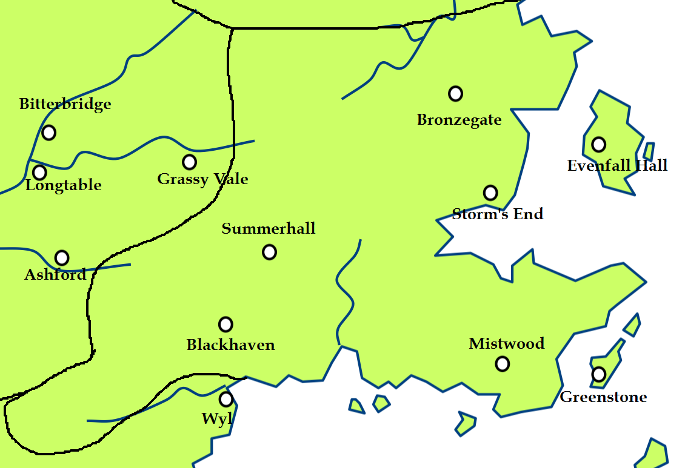

Storm's End
Storm’s End is one of the strongest castles in the Seven Kingdoms. It is the main seat of House Baratheon, and before it, the ancestral seat of the Storm Kings extending back many thousands of years. The castle is said to be protected by spells woven into its very walls that prevent magic from affecting it or passing through it.
Storm’s End is one of the strongest castles in the Seven Kingdoms. The castle is surrounded by a massive outer curtain wall, one hundred feet high and forty feet thick on its thinnest side and nearly eighty feet thick on its seaward side. It is composed of a double course of stones with an inner core of sand and rubble. The wall is smooth and curving, the stones so well placed so perfectly together that the wind can find no purchase. On the seaward side, there is a 150-foot drop below the wall into the sea.
The castle itself consists of one huge drum tower crowned with formidable battlements, so that from a distance enemies can see what appears to be a single huge, spiked fist thrusting towards the sky in defiance. The tower is so large that it comfortably contains the granary, barracks, armoury, feast hall and lord’s chambers all at once. There are spells woven into the stonework. The seaward side of the castle stands upon a high white cliffs overlooking the sea, and there is a barred, watery passage through a cavern that leads beneath the castle.
Map on Next page.
